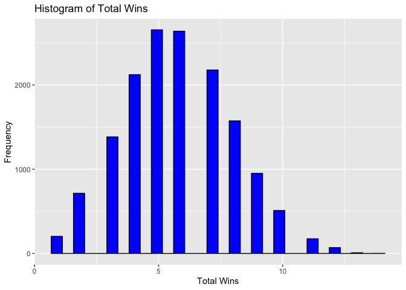
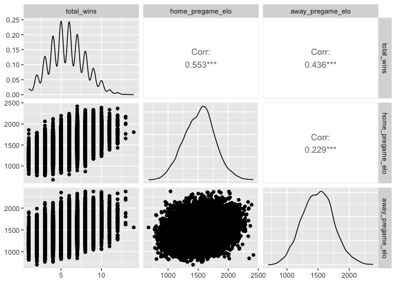
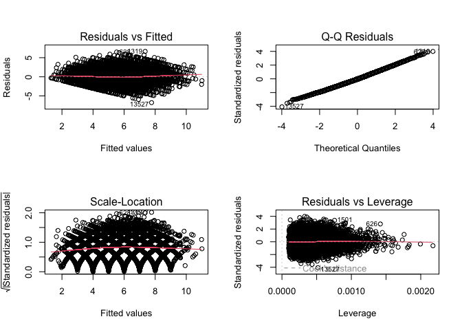
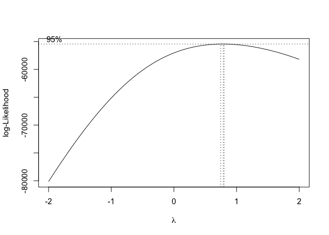
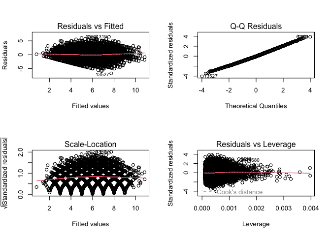
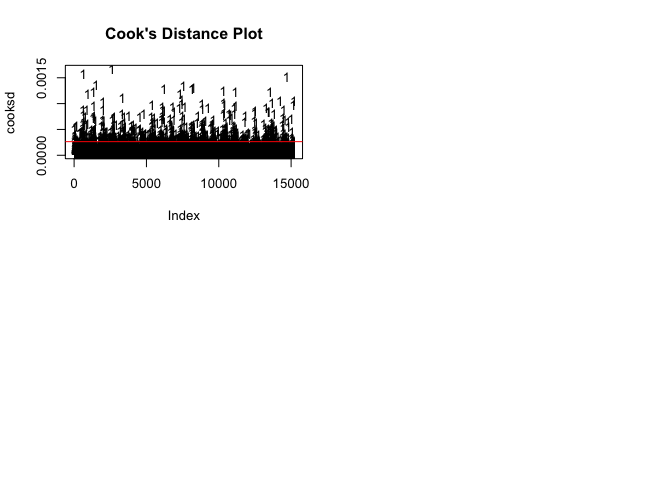

Statistical Test Results
In our analysis, we performed a t-test to compare mean total wins between conference and non-conference games. Our null hypothesis stated no difference in means (H0 : µconference = µnon-conference), while the alternative hypothesis suggested a significant difference (HA : µconference ≠ µnon-conference). The t-test results showed a t-value of -5.7939 with a p-value of 7.14e-09, leading us to reject the null hypothesis. We conclude that there is a statistically significant difference in mean total wins, with conference games having a lower mean than non-conference games.
Modeling and Predictions
We used linear regression to model the relationship between total wins and various predictors such as home and away ELO ratings, conference game status, and attendance. Our model achieved an R-squared value of 0.4136, indicating that around 41% of the variability in total wins is explained by the model.
lm_model <- lm(total_wins ~ home_pregame_elo + away_pregame_elo + as.factor(conference_game) + attendance + I(week^2), data = merged_df)
summary(lm_model)
Graphs
Model performance and residual plots:
     